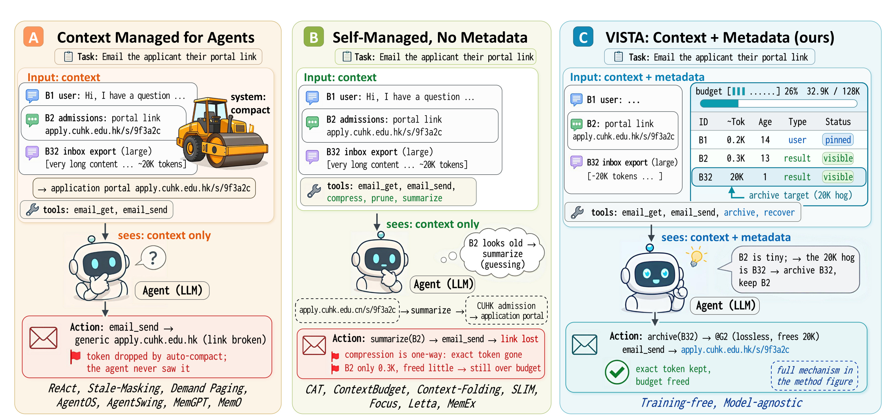
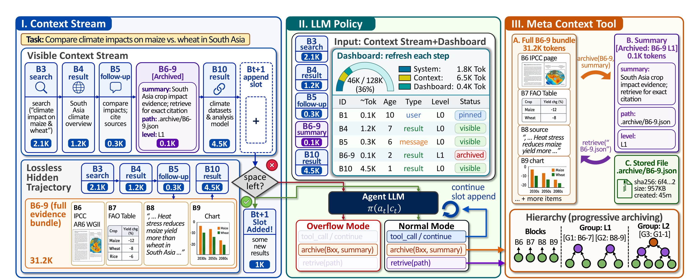
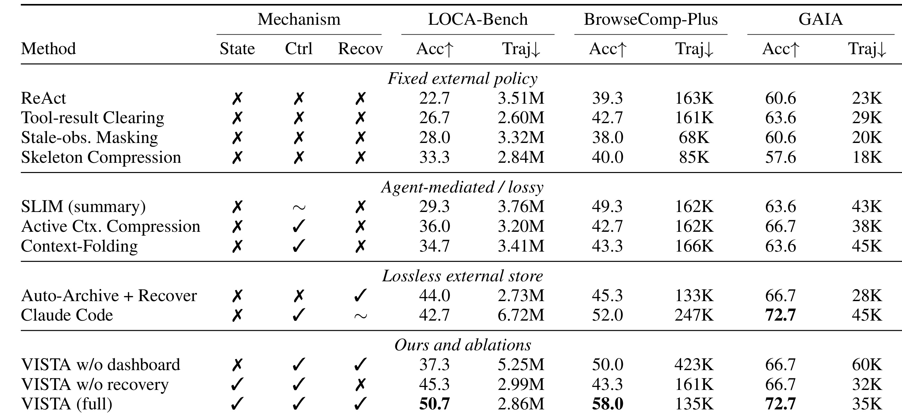
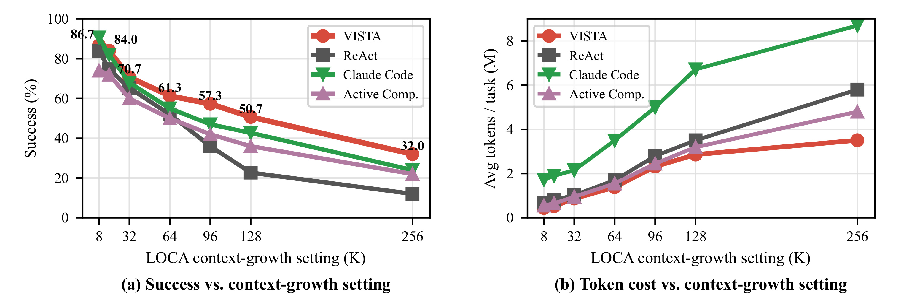
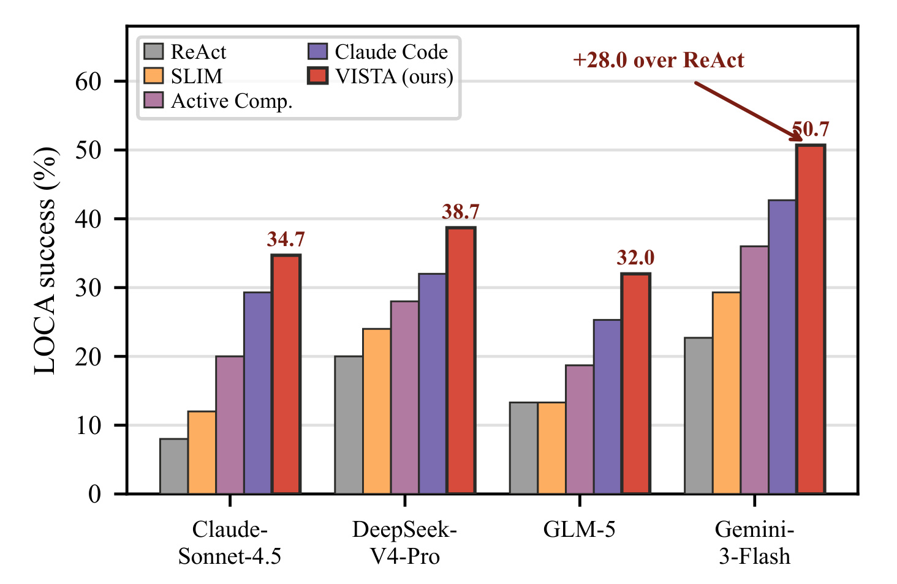
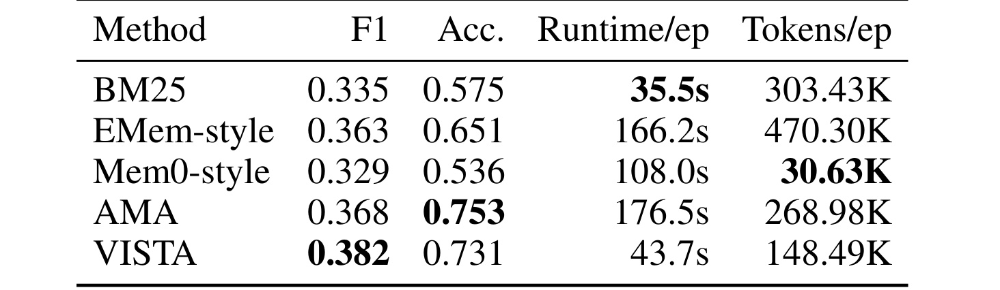
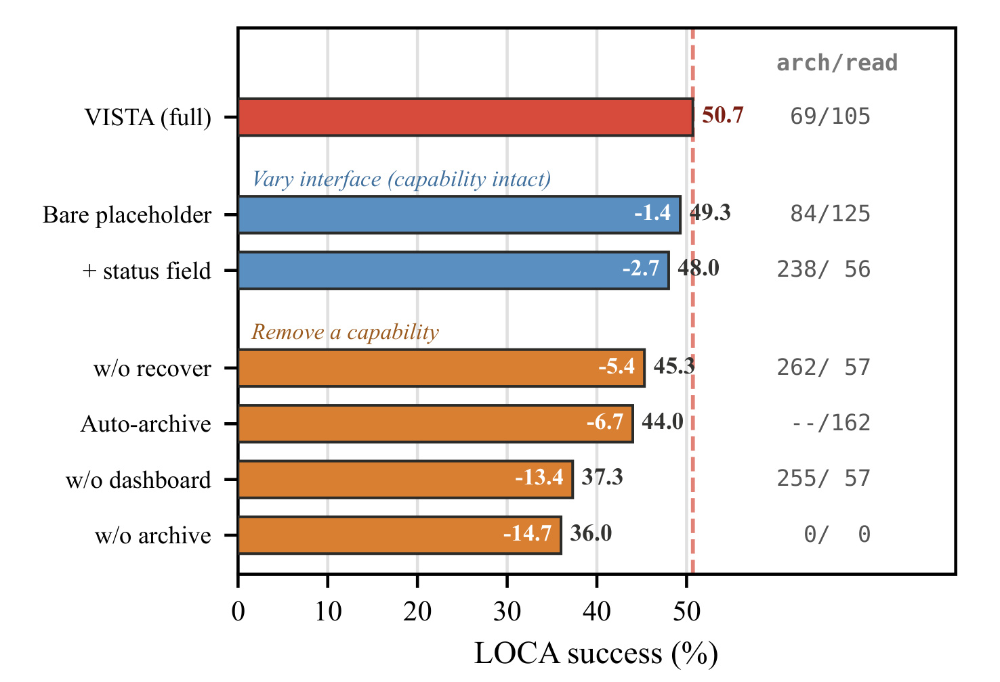
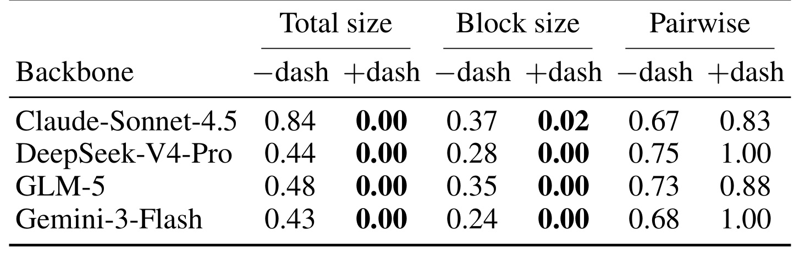
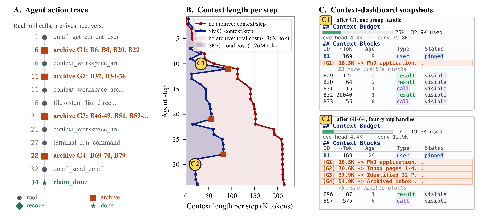

LLM Agents Are Latent Context Managers: Eliciting Self-Managed Context via a Proprioceptive Dashboard
[toc]
这篇论文提出的 VISTA，全名是 Visible Internal State for Tool Agents，研究对象是长程工具 Agent 在执行多步任务时如何管理自己的上下文。论文 2026-06-29 发布在 arXiv，作者为 Binyan Xu、Haitao Li、Kehuan Zhang；一作主机构是香港中文大学，作者行中还出现 LIGHTSPEED, Shenzhen 与腾讯实习背景。论文入口：arXiv:2606.30005。本轮未在 arXiv 页面或 PDF 首页核验到公开代码仓库。它和推荐、检索、RAG、Agent 记忆的关系很直接：这些系统都在长期任务里不断积累证据、工具输出和中间承诺，真正困难的不是“存不存”，而是运行到一半时还能不能知道哪些状态值得留在可见窗口里、哪些可以挪走、哪些以后必须精确找回。
长程工具 Agent 的瓶颈不只是上下文窗口太小，而是模型从提示词里看不见自己的工作记忆状态：每个证据块有多大、多久没用、是否被访问过、还剩多少预算，这些决定“保留、归档还是恢复”的信号都不在模型可见输入里；已有压缩或系统托管方法要么丢失精确证据，要么把状态藏在运行时层，使 Agent 只能盲猜。
1. 背景和问题
长程工具 Agent 的上下文更像工作记忆，而不是普通聊天记录。一个看似简单的任务可能持续几十步：读邮件、查网页、改表格、调用数据库、写文件、回到前面的证据、修正中间假设。随着步骤增长，提示词里会混入用户约束、工具观察、失败尝试、文件路径、数据表、外部链接和行动契约。只要后面某一步需要早期证据，系统就不能简单把旧内容删掉；但如果所有内容都留在窗口里，Agent 又会撞上 context limit，或者把大量预算浪费在此刻并不需要的证据上。
论文把既有路线拆成两类。第一类是系统外部托管：运行时用固定规则做 stale observation masking、paging、清理或压缩，Agent 本身并不参与决定。它的优点是简单、可控，但缺点也清楚：系统知道 block 大小、年龄、访问记录，却不一定知道任务语义；Agent 知道任务语义，却看不到运行时状态。第二类是把决定交给 Agent 或训练出的 context manager，例如让模型总结、删除、压缩或写记忆块。这类方法看起来更智能，但通常会把精确证据压成摘要，或者依赖特定训练集学到的策略。一旦后面需要的是原始链接、表格行、精确数字或工具返回的某个字段，摘要就可能永远补不回来。
VISTA 的切入点是“proprioception”，也就是自我状态感知。论文不是先问“应该训练什么压缩策略”，而是问“模型要做上下文管理，究竟缺了什么可见状态”。从提示词正文中，模型可以读到文本内容，却不能可靠知道一个 block 有多少 token、离现在多少 turn、有没有被重新访问、当前预算还剩多少。这些信息在运行时客观存在，但不在模型可见输入里。换句话说，Agent 被要求决定什么要保留，却没有看到做这个决定所需的仪表盘。

Figure 1 用一个邮件任务把问题讲得很直观。左侧是外部系统代替 Agent compact 上下文：portal link 这个关键证据可能被规则压掉，Agent 甚至不知道发生了什么，只能发出错误链接。中间是 blind self-management：Agent 能调用 summarize、prune 之类工具，却只看到正文，不知道 B2 很小、B32 很大，于是可能把真正要保留的 portal link 摘要掉，既没释放多少预算，又丢了精确证据。右侧 VISTA 则把每个 block 的 token 成本、年龄、类型、状态显式列出来，Agent 才能看出 B32 是 20K 的大块，而 B2 是 0.3K 的关键链接，因此应归档 B32、保留 B2。这个图的重要性不在于例子本身，而在于它把“上下文管理”从抽象压缩问题改写成了一个带状态观测的决策问题：没有元数据时，模型只能猜；有 dashboard 时，模型至少具备做对决策的观测条件。
这也是本文和普通记忆系统的差别。很多 Agent memory 工作强调长期存储、检索、摘要、图记忆或 scratchpad，但它们不一定处理“当前 active prompt 里每个块的运行时状态”。对于推荐系统和检索系统，这个区别尤其重要。推荐链路里的用户行为序列、会话证据、召回候选、重排解释、工具返回表格，也会不断增长；真正线上可用的系统往往要在成本、延迟、证据保真和可恢复性之间做取舍。VISTA 提供的是一种界面层思想：把 hidden runtime state 变成 Agent 可读的工作台，而不是只在系统后端悄悄调度。
论文的假设也比较克制：作者没有说 dashboard 一定让所有模型会管理上下文，而是说强模型可能已经在预训练和工具使用中学到了一些笔记整理、证据归档、检索恢复的隐式能力；缺的是接口。这个假设如果成立，后训练不是唯一解，一部分能力可以通过把运行时状态显性化来“激发”。因此 VISTA 的设计目标有三条：第一，暴露 per-block token cost、recency、access history 和剩余预算；第二，外部化必须可逆，不能把证据只剩成摘要；第三，方法要 model-agnostic，不依赖某一个 backbone 的专门微调。
2. 方法
2.1 问题设定：把上下文管理拆成可见、可归档、可恢复的工作区
论文先把普通 ReAct-style harness 的问题形式化。第 (t) 步时，Agent 有任务目标 (g)、原始交互历史 (H_t)、环境工具集合 (T) 和上下文预算 (B)。传统做法会把完整历史序列化到下一次模型输入里；一旦超过预算，就截断、清理、mask 或总结。VISTA 认为这一步混在一起的问题太多：什么仍然可见、什么被精确保留、什么未来可恢复，本来应该是三个不同维度，却被一次截断或摘要同时决定。论文的核心状态定义如下：
符号解释：(W_t) 是第 (t) 步的 workspace state；(V_t) 是会被放进下一次模型输入的 visible blocks；(A_t) 是存放在 active prompt 之外、但可通过 handle 找回的 archived payloads；(P_t) 是因为过大而没有进入 active stream 的 blocked results 或通知。这个公式看似简单，但它改变了系统边界：Agent 的工作记忆不再等同于 append-only history，而是一个有可见区、归档区和阻塞区的运行时工作区。
这套状态带来三个不变量。第一，active prompt 必须适配预算，不能靠 API 报错发现越界；第二，每个可操作单元要有地址，Agent 可以说 archive B17，而不是对一段无结构文本做模糊操作；第三，把 block 从提示词挪出不等于销毁，除非 Agent 显式删除。VISTA 的核心机制就是把“是否付费放进当前窗口”和“是否保留原始证据”拆开：当前不看，不代表以后不能精确恢复。
2.2 Context Stream：把交互历史改写成可寻址 block 流
Context Stream 是第一层。每条用户消息、助手消息、工具调用和工具结果都会注册成 block，带有稳定 ID、类型、token 估计、短预览、parent link 和状态。visible block 以精确内容进入模型输入；pinned block 因协议要求必须保留；archived block 在可见流里只保留 compact handle 和摘要，原始 bytes 存在外部；blocked block 表示某个工具结果太大，不能直接塞入当前预算；deleted block 则是有意移除且不可恢复。
这相当于给上下文建立地址空间。没有 VISTA 时，Agent 只能说“上面那段邮件”或“之前那个表格”；有 block stream 后，它可以对 B32、B6-9、G1 这样的对象做决策。大块证据可以被组成 bundle，放入 hidden trajectory，visible stream 只保留一个摘要和路径。新的观察进入 append slot；若没有空间，workspace 进入 overflow mode，先处理上下文，再继续普通任务。

Figure 2 是方法章最关键的图。左边的 Context Stream 把原始 transcript 变成 B3、B4、B5、B6-9、B10 等 block；B6-9 这个大 evidence bundle 被外部化后，可见流里只留下 0.1K tokens 的摘要、路径和层级信息，但 hidden trajectory 仍保存完整的 31.2K tokens 证据。中间的 LLM Policy 接收的是 Context Stream 加 Dashboard，而不是裸历史；dashboard 用 budget bar、ID、token 数、age、type、level、status 告诉模型当前工作区状态。右边的 Meta Context Tool 则说明 archive 不是“摘要替代原文”，而是生成 summary、path、sha256、size、created 等 handle，并把完整 payload 存起来。图中最值得注意的是信息流方向：普通工具调用和 context action 都由同一个 Agent policy 选择，系统提供观测和动作空间，但不在后台替模型决定哪条证据语义上重要。
2.3 LLM Policy 与 dashboard：把 token 成本、recency 和访问历史暴露给同一个策略
VISTA 的第二层是 dashboard。每次工具结果注册后，dashboard 会重新生成，报告预算条、block IDs、估计 token、age 或 recency、type、archive level、parent、status 等状态。论文反复强调它不是 learned memory oracle，不提供隐藏任务证据，也不判断哪个 block 语义重要；它只是把运行时状态如实展示出来。真正的任务证据仍来自 visible blocks 和可恢复 payload。模型输入可以概括为：
符号解释：(C_t) 是第 (t) 步组装后的模型输入；(\mathrm{Assemble}(V_t,A_t)) 表示把可见 blocks 与 archive handles 组织成 prompt；(D_t) 是 dashboard；(a_t) 是模型选择的下一步动作；(\pi(a_t \mid C_t)) 是同一个语言模型策略在输入 (C_t) 下对动作的条件分布。这个公式说明 VISTA 没有额外训练一个 controller；普通环境动作和 archive/recover 等 context actions 都由同一个模型在同一个输入条件下选择。
这里的关键是 normal mode 和 overflow mode 的差别。normal mode 中，Agent 可以继续任务、调用工具、归档 block、读取 payload；context management 是和普通任务工作竞争的动作，只有模型认为值得时才做。overflow mode 中，普通工具调用被临时禁用，Agent 必须先把 visible context 降到预算内。这样设计的好处是 hard budget 由 harness 执行，避免 API 失败；但具体挪走什么，仍由 Agent 基于 dashboard 与任务上下文判断。
2.4 Meta Context Tool：lossless archive、层级 handle 与按需 recovery
第三层是 Meta Context Tool。archive 接收 block identifiers 和短 replacement summary，把对应 block 从 active context 移走，将 exact payload 写入外部存储，并返回带 path、level、size、checksum 的 handle。recovery 则不是一个神秘检索器，而是通过普通文件或终端访问 stored payload path。如果 payload 太大，Agent 可以读 bounded chunks，或者根据 source metadata 重新向原始工具发更窄查询。
这个设计和摘要压缩的本质区别在于：summary 是导航提示，不是证据的唯一剩余形态。如果原始工具结果里有精确链接、表格行、CSV 字段或用户约束，archive 后这些 bytes 仍然存在。层级归档也很重要：第一层可以把 B6-B9 归成 G1，后续又可以把多个 group 归成更粗粒度 handle。在 long-horizon 任务里，这允许 Agent 用小的可见索引管理大的证据树。
论文用 Proposition 1 解释为什么 recoverability 在最坏情形下不是可选项。设一个任务族 (T_{N,k}) 包含 (N) 个独立证据块，每个块 (X_i) 是 (k) bit 的均匀随机串；prompt 最多容纳 (B) bit，且 (Nk>B)。最后一步随机揭示索引 (i^\star)，要求 Agent 精确输出 (X_{i^\star})。对任何不能恢复原始块、只能保留 pre-reveal 状态 (R) 的方法，论文给出：
符号解释：(\Pr[\mathrm{correct}\ \mathrm{on}\ T_{N,k}]) 是在任务族 (T_{N,k}) 上正确输出被询问证据块的概率；(B) 是可放入 prompt 的信息预算；(N) 是证据块数量；(k) 是每个证据块的信息量；(\frac{B}{Nk}) 表示预算最多能覆盖的全体证据信息比例；(\frac{1}{k}) 来自 Fano-style bound 中的误差项。直觉是：如果未来要问哪个块未知，而你又不能从外部恢复，有限摘要最多保住一部分 exact bits，其余块被问到时只能猜。VISTA 若能保存 handles 并在揭示后读回目标 payload，只要指令、handles 和一个恢复块能放入预算，就可以精确恢复。
这个命题不是说真实任务都由随机 bit 构成，而是给出一个边界条件：只要后续答案依赖精确证据，单向压缩就有不可恢复的失败模式。真实任务可能包含冗余语言和低熵信息，所以摘要有时够用；但链接、表格行、用户 ID、文件路径、付款金额这类字段只要被错误摘要，后续就很难修复。
2.5 Budgeted Loop 与消融变量：训练免费但运行时强约束
VISTA 的 per-step loop 可以理解为五步：注册新消息为 blocks；刷新 dashboard；从 visible blocks 和 handles 组装 (C_t)；若接近硬限制则预先 externalize 大块；再让模型在普通工具和 context tools 之间选择动作。若新消息本身超过阈值 (\theta)，它会被注册成 blocked notification，而不是直接污染 active prompt。若 (|C_t|>\beta B)，preflight guard 会外部化最大 blocks；若仍超过 (B)，Agent 只能使用 context-management tools 先修复工作区。archive 动作的状态更新可写成：
符号解释：(\mathcal{B}) 是 Agent 选择归档的一组 block；(b_i) 是其中第 (i) 个 block；(\mathrm{payload}i) 是写入外部存储的原始内容；(\rho) 是 replacement summary 或 handle metadata；(V_t \setminus \mathcal{B}) 表示这些 block 从可见流移除；(A_t) 增加可恢复 payload；(W) 是更新后的工作区。这个公式抓住了 VISTA 的工程语义：可见上下文减少，但证据不消失。
论文的消融变量也围绕这条路径设置。No-archive 去掉外部存储；No-dashboard 保留 archive/recovery 动作但去掉状态表；No-recover 让 archive 变成 clearing；Auto-archive 把选择权交给固定规则；interface variants 则只改表面措辞或 placeholder。这样的设计能把“工具是否存在”“状态是否可见”“证据是否可恢复”“选择是否由 Agent 做”分开验证。
3. 实验结果
3.1 主实验：跨三个压力尺度比较 VISTA 与压缩/清理/强 Agent baseline
实验覆盖三个尺度。LOCA-Bench 是主压力测试，构造 million-token 级长程工具任务，让早期证据、庞大工具结果和后续行动相互牵连；BrowseComp-Plus 是 100K 级 deep-research retrieval 迁移，窗口故意设得较紧，让早期检索证据可能在综合前被挤掉；GAIA 是更短的 10K 级 general assistant 设置，用来测试较轻压力下是否会出现明显负担。baseline 包括 ReAct、Tool-result Clearing、stale-observation masking、SLIM、Active Context Compression、Skeleton Compression、Context-Folding、Auto-Archive + Recover 和 Claude Code。主 LOCA-Bench 运行使用 Gemini-3-Flash，预算 128K。

Table 1 的读法要先看左侧 mechanism columns。State 表示 Agent 能不能看到上下文状态，Ctrl 表示上下文决定是否由 Agent 控制，Recov 表示被移走证据是否能精确恢复。VISTA full 是三者都具备的唯一方法，因此它在 LOCA-Bench 达到 50.7，明显高于 ReAct 的 22.7、Tool-result Clearing 的 26.7、SLIM 的 29.3、Active Context Compression 的 36.0、Claude Code 的 42.7。BrowseComp-Plus 上 VISTA 为 58.0，也高于 ReAct 的 39.3 与 Claude Code 的 52.0；GAIA 上 VISTA 与 Claude Code 都是 72.7。这里不能简单说 VISTA “全面更省 token”：例如 Claude Code 在 LOCA 的 trajectory token 是 6.72M，VISTA 是 2.86M，确实更低；但在 BrowseComp-Plus，作者后文说明 VISTA 可能因为存活更久、检索轮次更多而消耗更多 cumulative API tokens。表的核心结论不是“压缩率最高”，而是“只有可见状态加可恢复动作空间”能在多尺度下稳定胜过只清理、只摘要或只外部规则。
3.2 LOCA 压力扫描：收益随上下文压力上升而放大
LOCA-Bench 是论文最贴近目标失败模式的实验：有用观察很早出现，后面不断加入大工具结果，Agent 许多步以后还要正确行动。作者没有只报告一个 128K 点，而是做了从 8K 到 256K 的 context-growth sweep。

Figure 3 左图显示，低压力下各方法差距没那么大，VISTA 在 8K、16K 附近分别是 86.7 和 84.0；随着 distractor volume 增大，曲线整体下滑，但 VISTA 下降更慢。到 128K，VISTA 是 50.7，而 ReAct 只有 22.7；到 256K，VISTA 也降到 32.0，说明它不是无限扩展方案，只是比不可恢复或盲压缩更稳。右图的 token cost 很重要：Claude Code 在高压力下成本显著变高，VISTA 的成本曲线也会上升，但没有用单纯“多花 token”解释成功率差异。这个实验支持本文机制判断：当上下文压力不高时，dashboard 的价值有限；当旧证据越来越可能被挤掉时，能把证据挪出并保留恢复路径的工作区才开始显著拉开差距。
3.3 跨 backbone 与 AMA 迁移：不是某个模型或某个 benchmark 的特例
如果 VISTA 真是在“激发已有能力”，而不是靠 Gemini-3-Flash 的特殊行为或某个 prompt trick，它应该能迁移到不同 backbone。论文在 Claude-Sonnet-4.5、DeepSeek-V4-Pro、GLM-5、Gemini-3-Flash 上复用同一个未训练 VISTA layer。

Figure 4 展示了四个 backbone 的 LOCA success。VISTA 在每个模型上都是最高：Claude-Sonnet-4.5 为 34.7，DeepSeek-V4-Pro 为 38.7，GLM-5 为 32.0，Gemini-3-Flash 为 50.7。这个图同时说明两个点。第一，收益不是弱模型专属，因为较强的 Claude-Sonnet-4.5 和 Gemini-3-Flash 也受益；第二，收益大小仍和模型能力有关，GLM-5 的绝对增益较低，论文在 limitation 中也承认，如果模型本身缺少上下文管理潜能，dashboard 能激发的东西有限。对工程落地来说，这意味着 dashboard 不是训练的替代品，而是一个应和模型能力共同评估的界面层。

Table 2 把 VISTA 放到 AMA-Bench 这个离线 trajectory-memory 设置里。这里不是在线工具任务，而是把完成轨迹作为初始 workspace，再问过去事件、因果关系或状态变化。VISTA 的 F1 为 0.382，高于 BM25、EMem-style、Mem0-style 和 AMA 行；但 Acc. 为 0.731，低于专门 AMA agent 的 0.753。runtime/ep 上，VISTA 是 43.7s，远低于 AMA 的 176.5s，也低于 EMem-style 和 Mem0-style。这个结果应该谨慎读：它不是说 VISTA 取代专门 memory agent，而是说明同一个 context layer 可以作为 trajectory-memory adapter，在没有 memory-specific tuning 的情况下保持竞争力。它也提示推荐/搜索系统里的 session memory 不一定只靠向量检索或摘要记忆，显式 workspace map 可能成为另一类轻量接口。
3.4 消融：工具、可见状态、恢复路径、Agent 选择缺一不可
主结果可能有多种解释：是不是 VISTA 只是 prompt 写得好？是不是 archive 工具本身就够？是不是自动归档也能做？Figure 5 针对这些问题做了 component ablation。

Figure 5 先看“Vary interface”两行：Bare placeholder 仍有 49.3，+ status field 有 48.0，只比 full VISTA 低 1.4 和 2.7，说明只要能力路径保留，表面措辞或 dashboard 形式不是主要来源。再看“Remove a capability”：w/o recover 降到 45.3，Auto-archive 降到 44.0，w/o dashboard 降到 37.3，w/o archive 降到 36.0。这里最有解释力的是 w/o dashboard：archive 和 recovery 动作仍在，但没有工作区状态表，性能显著下降，说明“有工具”不等于“会用工具”。Auto-archive 也低于 full，说明固定规则不能完全替代 Agent 基于任务语义的选择。这个消融支持 VISTA 的链式机制：visible state 让模型知道该动哪里，agent choice 让任务语义参与决策，lossless archive 保存证据，recovery 让后续精确引用成为可能。
3.5 Proprioceptive blindness 诊断与 rescued trace
论文还单独测试了“模型到底是不是真的看不出自己的上下文状态”。作者取真实 LOCA-Bench 运行中第一次 archive 事件前的 transcript，去掉 dashboard、协议头、硬限制 token 提示和 archive placeholders，要求模型估计总 token 数、若干 block size、两两大小关系，以及 recency 控制问题。这样能把“记得对话顺序”与“知道 token magnitude”分开。

Table 3 显示，去掉 dashboard 后，各 backbone 对 total size 的 median relative error 很大：Claude-Sonnet-4.5 为 0.84，DeepSeek-V4-Pro 为 0.44，GLM-5 为 0.48，Gemini-3-Flash 为 0.43；加入 dashboard 后 total size error 都降到 0.00。Block size 也类似，+dash 后几乎为 0 或 0.02；pairwise within-2x accuracy 也明显改善。这个诊断对论文论点很关键，因为它排除了“模型从正文里自己能推断上下文状态”的乐观假设。模型能看到文本顺序，并不等于能知道 token 成本；能记得某句话出现过，也不等于知道某个 block 是 0.3K 还是 20K。dashboard 提供的是 factual interface，而不是更强 prompt。

Figure 6 把机制落到一个 128K LOCA-Bench email-triage run。左侧 trace 显示 Agent 在第 6、11、21、28 步多次 archive，最后仍能 email_send_email 并 claim_done；中间曲线对比了 no archive 和 VISTA-style self-managed context 的 live context length，总成本也从 no archive counterfactual 的 4.36M tok 降到 SMC 的 1.26M tok；右侧 dashboard snapshots 显示归档后的 group handles，例如 G1、G2、G3、G4，同时保留 B96、B97 等当前可见块。这个案例对应论文正文里的 perceive、decide、recover、solve 链路：dashboard 先暴露 B32 这种大块，Agent 决定归档而不是清理小块，后续需要时再读回 exact payload，最终输出精确值。对比 baseline 的失败点是：它们可能总结或清理了同一证据，后续无法恢复 exact content，只能给近似或错误答案。
整体实验的强处在于：主表、压力扫描、跨模型、消融、诊断和案例之间能互相扣上。Table 1 告诉你 full VISTA 确实更好；Figure 3 说明提升随压力增加而更像机制效应；Figure 5 说明 dashboard、archive、recovery、Agent choice 都有独立贡献；Table 3 证明 dashboard 解决的状态感知缺口是真实存在；Figure 6 则展示了一个具体任务中这些部件如何连起来。限制也同样明确：实验主要在四个 backbone、若干 benchmark 上完成；BrowseComp-Plus 的成本并非无条件更低；AMA 的准确率并没有压过专门 agent；安全攻击、恶意文档诱导错误归档、训练后策略和 dashboard 结合等问题仍未覆盖。
4. 总结
4.1 我的判断
这篇论文最有价值的地方，是把“长上下文 Agent 记忆”从存储容量问题转成状态可见性问题。很多系统默认把上下文压缩看作模型外部的工程优化，或者把记忆管理看作要训练的策略；VISTA 则指出，至少在一部分强模型上，缺口可能是接口：模型知道如何做某些整理和恢复动作，但它看不到做动作所需的运行时状态。因此 VISTA 的贡献不是发明一个更复杂的记忆库，而是把 hidden runtime metadata 提升为 Agent 可读、可操作、可验证的 dashboard。
对推荐和搜索工程来说，这个思想比论文表面上的 Agent benchmark 更可迁移。推荐系统也经常在多层状态之间切换：用户短期会话、长期画像、召回候选、排序证据、重排解释、业务约束、广告预算、内容安全标记。很多信息在系统里有元数据，但模型或策略层看不到，最后只能通过固定规则或学习到的隐变量间接处理。VISTA 提示我们可以把 token cost 换成候选数、延迟、召回源、证据新鲜度、用户行为年龄、特征可恢复性等 dashboard 字段，让模型或策略在可见状态上做选择。
4.2 工程启发与复现建议
复现时不应只复现 archive/recover 工具，而要同时复现 dashboard 字段和 action constraint。第一，block 粒度要稳定，否则 Agent 无法可靠引用 B17 这样的对象；第二，token estimator 要和实际 prompt assembly 接近，否则 dashboard 会误导模型；第三，archive payload 要 byte-exact，不能只存摘要；第四，overflow mode 要硬约束普通工具，避免模型继续把上下文推爆；第五，validator 要检查 recovered payload 是否真的参与后续答案，而不是只记录 archive 次数。
如果把它迁移到 RAG 或推荐系统，我会优先做三类实验。第一，在 long-session conversational recommendation 中，把候选、用户约束和工具返回做成 addressable blocks，测试模型是否能更好地保留硬约束。第二，在 deep research/RAG 中加入 dashboard，对比“只检索 top-k”与“把早期证据归档并按需恢复”的证据引用准确率。第三，在排序解释或人工审核工作流中，把大表格、大日志和小关键字段分离，让模型学会归档大块但保留小的 action-critical facts。
4.3 局限与后续跟进
局限至少有四点。第一，dashboard 只提供状态，不保证模型会正确使用；低能力模型可能仍会误读或错归档。第二，archive/recovery 引入了新的攻击面，恶意工具输出可能诱导 Agent 归档关键证据或恢复错误路径，论文没有做安全评测。第三，实验 benchmark 虽然覆盖不同尺度，但仍和真实生产 Agent 有差距，尤其是权限、隐私、并发工具和多人协作状态。第四，VISTA 的成本收益不是单调的：在 BrowseComp-Plus 这类任务中，系统可能因为存活更久而累计更多检索和调用。第五，论文未与 post-training context manager 做组合实验，因此还不知道 dashboard 加训练策略是否会互补或互相干扰。
后续我会重点跟三件事。其一，看作者或社区是否开源 harness，因为没有代码时很难判断 dashboard 渲染、token estimator、preflight offload 和 recover path 的实现细节。其二，关注是否有人把 proprioceptive dashboard 接到真实开发 Agent 或浏览器 Agent 中，观察它对文件路径、网页证据和数据库行的精确恢复是否稳定。其三，关注安全和评测扩展：如果 malicious payload 可以操纵 archive summary，或者 dashboard 本身被 prompt injection 污染，VISTA 的可见状态反而可能成为新的攻击界面。总体上，这篇论文给出的不是最终形态，而是一条很清晰的系统设计方向：让模型管理上下文之前，先让它真正看见自己的上下文状态。